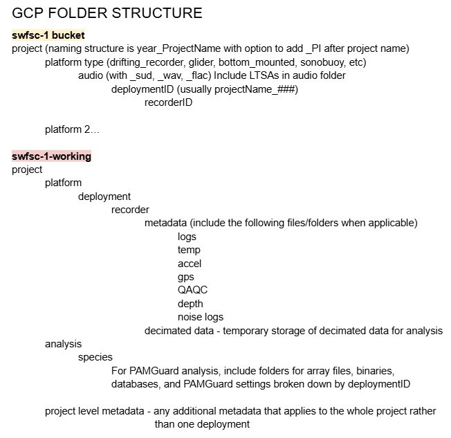
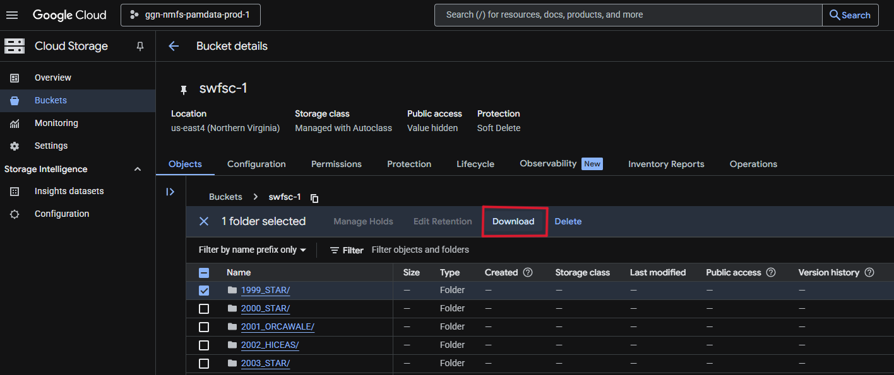

Google Cloud
GCP for Archive and Analysis
National PAM SI Cloud Repo: more details on cloud storage and processing from the cloud team
SWFSC GCP Buckets:
swfsc-1 : all raw audio data and LTSAs
swfsc-1-working : all metadata, analysis files, and other ancillary data
Data Structure
Below is a general data structure of the two buckets. The most updated data structure can be accessed here

Accessing Data
Check the archive spreadsheet to see if the dataset you are interested in accessing is available in the SWFSC-SAEL bucket.
Data can be downloaded directly from the bucket/project of interest by selecting the folder and clicking ‘Download’.

Cloud Storage
Manual Upload
Open SWFSC bucket in GCP console
Select Upload (Upload files or Upload folder) and navigate to the data you want to upload
Click “Upload”
CautionLarge data files or datasets may crash GCP with this upload method. If you would like to upload large amounts of data, do so through the GCP sdk/gsutil options below
sdk/gsutil Set-Up
- Download the Google Cloud CLI installer and install Cloud SDK on your computer
- Open the ‘Google Cloud SDK Shell Terminal’, follow the prompts, and select ‘ggn-nmfs-pamdata-prod-1’ as your project
sdk/gsutil Upload
- Open the ‘Google Cloud SDK Shell Terminal’
- Enter the follow command to upload files to the GCP:
gsutil -m cp -r [source pathway to files to be uploaded/] gs:[destination pathway to folder on bucket/]- SAEL ADRIFT Example
"gsutil -m cp -r E:\DATA\LEG_2\RECORDINGS\CalCurCEAS_004 gs://swfsc-1/drifting_recorder/CalCurCEAS_2024"
- SAEL ADRIFT Example
- Processing should start, wait for terminal prompt to update then refresh the SWFSC bucket website to see your uploaded data
Automated sdk/gsutil Upload
You can use the following R script to automatically run the above command and bulk upload data from a source. R script available here. This script is set up to only run from 6 pm to 6 am on weekdays and full time on weekends, to avoid excess network traffic.
# ----FUNCTIONS----
# Space-to-underscore renamer
rename_spaces <- function(path = ".") {
# Get all files and folders
all_paths <- list.files(path, recursive = TRUE, full.names = TRUE, include.dirs = TRUE)
all_paths <- all_paths[order(nchar(all_paths), decreasing = TRUE)]
# Rename each item that contains spaces
for (p in all_paths) {
if (grepl(" ", basename(p))) {
new_path <- file.path(dirname(p), gsub(" ", "_", basename(p)))
file.rename(p, new_path)
cat("Renamed:", basename(p), "->", basename(new_path), "\n")
}
}
}
# Check for weekday and hour, run between 6 AM and 6 PM on weekdays
is_weekday <- function(x){
weekdays = c('Thursday', 'Friday', 'Monday', 'Tuesday', 'Wednesday')
return(weekdays(x) %in% weekdays)
}
is_after_hours <- function(x){
return(as.integer(format(x,"%H")) < 6 | as.integer(format(x, "%H")) > 18)
}
# Copy function
copy_files_to_GCP <- function(Local_dir, Cloud_dir, file_type = NULL, log_file, offHoursCopy = TRUE) {
## List files
file_type <- paste(file_type, collapse = "|") # combine all file types to one regex (uses or expression)
good_files <- list.files(Local_dir, pattern = file_type, full.names = TRUE, recursive = TRUE)
## Copy files
for (file in good_files) {
# check for after hours, will run any time if offHoursCopy = FALSE above
if (offHoursCopy) {
while (is_weekday(Sys.time()) & !is_after_hours(Sys.time())) {
cat(paste('waiting...',Sys.time(), "\n"))
Sys.sleep(600) #wait 10 minutes until trying again
}
}
# build a relative GCP path to retain local folder structure
rel_path <- gsub(paste0("^", Local_dir, "/?"), "", file)
GCP_path <- paste0("gs://", Cloud_dir, "/", rel_path)
# create gsutil command
cmd <- paste0("gsutil -m cp -c -L \"", log_file, "\" \"", file, "\" \"", GCP_path, "\"")
# pass command to process and print progress message in R console
message("Uploading: ", file, " -> ", GCP_path)
system(cmd)
}
## Create Log
# read in log file created in cmd
log_df <- read.csv(log_file, header = TRUE)
# subset files that successfully transferred and failed
successful_log <- subset(log_df, Result == "OK")
failed_log <- subset(log_df, Result == "error" | Result == "SKIPPED" | Result == "skipped")
# number of files that successfully copied and failed
N_files_copied <- nrow(successful_log)
N_files_failed <- nrow(failed_log)
# number of folders copied
successful_log$Folder <- dirname(successful_log$Source)
num_folders_copied <- length(unique(successful_log$Folder))
# Total local size and total cloud size
total_local_size <- sum(as.numeric(successful_log$Source.Size), na.rm = TRUE)
total_bytes_transferred <- sum(as.numeric(successful_log$Bytes.Transferred), na.rm = TRUE)
# create summary dataframe
summary_df <- data.frame(Files_Copied = N_files_copied, N_files_failed, Folders_Copied = num_folders_copied, Total_Local_Size_bytes = total_local_size, Total_Cloud_Size_bytes = total_bytes_transferred)
xlsx_file <- sub("\\.txt$", ".xlsx", log_file)
# Create a new workbook
wb <- createWorkbook()
# Add Summary sheet
addWorksheet(wb, "Summary")
writeData(wb, "Summary", summary_df)
# Add Success Files Sheet
addWorksheet(wb, "Completed Files")
writeData(wb, "Completed Files", successful_log)
# Add Failed Files sheet
addWorksheet(wb, "Failed Files")
writeData(wb, "Failed Files", failed_log)
# Save the workbook
saveWorkbook(wb, xlsx_file, overwrite = TRUE)
}
# ----EXAMPLE WORKFLOW----
## ----STEP 1: Define parameters----
library(openxlsx)
# Path to Local Directory you want to copy FROM
Local_dir <- "Z:/RECORDINGS/DRIFTERS/CCES_2018/RAW"
# Path to Cloud Directory you want to copy TO
Cloud_dir <- "swfsc-1/2018_CCES_1651/drifting_recorder/audio_wav"
# Log file name with path
log_file <- paste0(getwd(), "/GCP_transfer_log_", format(Sys.time(), "%Y%m%d_%H%M%S"), ".txt") # (used with gsutil -L command). Leave as is, unless you want to change where the log file is saved to. This structure is built to save it to your current working directory
# Copy off hours?
offHoursCopy <- FALSE # default is TRUE = Copy only on nights/weekends
# Copy all files? Choose file type if you do not want copy all
file_type <- c("\\.wav$", "\\.ltsa")
# file_type <- c("\\.wav$", "\\.log.xml$", "\\.accel.csv$", "\\.temp.csv$", "\\.ltsa$", "\\.flac$")
## ----STEP 2: (Optional) Rename files/folders to remove spaces----
# Spaces within your filenames/foldernames may lead to downstream processing issues
# We recommend you run this and replace any spaces in your ORIGINAL filenames/foldernames
# Risk: If you have documents, code that require the exact names (with spaces), you may have issues
# DO NOT RUN THIS LINE IF YOU NEED TO RETAIN SPACES IN YOUR FILE NAME, these functions will still work
# rename_spaces(Local_dir)
## ----STEP 3: Copy files to GCP----
# progress will be printed to the R console, check the output xlsx file for errors
copy_files_to_GCP(
Local_dir = Local_dir,
Cloud_dir = Cloud_dir,
file_type = file_type,
log_file = log_file,
offHoursCopy = offHoursCopy
)
# --------------Final Notes:--------------
# You must have gsutil installed and authenticated on your system
# Make sure the GCP bucket exists and you have write permissions
# Output Excel log will be saved to your working directory alongside your log txt file, summarizing success/failures of file uploads More information on Cloud Storage
See the PAM SI Cloud Storage website for more information and troubleshooting tips
Cloud Processing
work in progress
Cloud based processing is now available through google workstations using the data you upload to GCP. SAEL has not began processing in the cloud but you can follow the steps below to establish a windows virtual machine (workstation) and access the existing cloud based software
PAM Windows Workstation
Follow the detailed directions here to establish a windows workstation
More Information on Cloud Processing
See the PAM SI Cloud Processing website for more information and troubleshooting tips